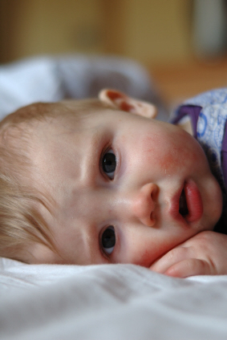
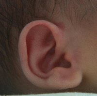

Handling an Infant Fever Effectively (and Other Medical Tips for Moms)

Poor baby! Here's what you need to know to fight that wicked infant fever.
Does the thought of handling an infant fever leave you in cold sweats? One of my greatest fears when I first became a mom was that I wouldn't have the "magic touch".
You know...the touch our moms had? The one that said "Yep, she's got a fever", with just the barest finger swipe across the forehead? Where do they teach that?
I have since acquired the ah-ha! skill of fever touch detection. (After you've touched a few dozen hot foreheads it becomes second nature.)
But in this modern technological wonder age, why settle for approximations? Acquire a reliable thermometer
to see you through the years ahead. Your future self will thank you.
That little plastic beeping stick can greatly reduce your mothering anxiety, yes. But it's only the first grade. You, my dear, need to graduate. You need a crash-course
in effective fever management.
Why? Because at some point your infant is going to get a fever. And now you're going to know exactly what to do about it.Promise.
So let's start with the basics.
What's Normal?
The normal temperature of a baby (according to the American Academy of Pediatrics) is between 97 and 100.4 degrees Fahrenheit (F) or 36 to 38 degrees Celsius (C).
The actual temperature isn't the only indicator of a fever in yoru infnat. Your baby's age is a large factor in whether or not a fever exits.
Newborns 0 to 3 Months
Newborns have weak, developing, immune systems. And since fevers are often the first sign of an infection, a newborn fever of any size should be reported to
the doctor. So if you take your infant's temperature and it's registering at 100.4 F (38 C) or more, call your doctor for
advice.
Infants 3 to 6 Months
Infants at this age are gaining strength, but still need to be closely watched. If your baby develops a fever of 101 F (38.3 C) or higher, it's time for a doctor call.
Babies Older Than 6 Months
Children over 6 months do not generally need to be seen by a doctor until their infant fever is over 103 F (39.4 C). But that doesn't mean you can't fight it at home.
The Universal "Call the Doctor" Code
No matter what age your baby is or what the thermometer says, there are a few instances when your baby will need to be seen. First, if the infant fever
rises above 107.6 F (or 42 C), get your baby to the hospital. There is a strong illness fighting inside that your infant will need help to defeat.
Second, if you've sucked out her stuffy nose
and she's still struggling to breathe, call your doctor.
Third, small purple-red dots or blotches on his skin that don't turn white when you press on them may be a sign of a bacterial infection. Pick up the phone and ring your pediatrician.
Once you've made the call, your doctor (or his nurse) is going to ask you one or all of the following questions:
Is she acting normal?
Is he eating well?
Does she seem more tired than usual?
Is he noticably pale or flushed?
Is she irritable?
Are there any other changes in his behavior or appearance that seem abnormal to you?
Be sure to also mention to the doctor if your baby has a cough, is struggling with an ear infection, vomitting, or has diarrhea.
Most fevers are caused by respiratory infections (like the common baby cold). These are usually viruses that are resistant to antibiotics.
It's a waiting and watching game in those circumstances.
However, occasionally you may find your baby has fever because of something else. Is he shivering? That may be a sign that a bacterial infection has settled in.
If that's the case, your doctor's arsenel of antibiotics may be just what your baby needs.
What You Don't Know About the Infant Fever
I'm going to go out on a limb here, but I'm going to guess that you probably don't realize that fighting an infant fever isn't always the best plan.
Whaaaah?
That's not a typo. An infant fever is your friend. You don't want it to go away. Yet.
A fever is a sign that the body is fighting some kind of illness (that's probably not news to you).
But an infant fever is also a defense mechanism. A hotter body isn't as much fun for
naughty bacteria and viral bugs. They thrive at the normal body temperatures. 98.6 degrees is prime real estate for a coco-cabana, with your baby's healthy cells as the margaritas.
But raise thermostat a few degrees and suddenly the frat party turns sour.
Enter the White Knights (a.k.a. white blood cells). After a gory battle I can't detail here (it's a family friendly site), the losers are massacred and your baby's smiling again.
Sounds great, right? Except for the fact that nothing's ever that easy.
You, my friend, have got a tightrope to walk. On the one side, the fever is helping your body fight the battle, and reducing the fever
too much can prolong the battle.
On the other side, an infant fever can leave your baby uncomfortable, keeping him from eating or sleeping...which prolongs the illness that way.
It's up to you (and your doctor) to figure out how to walk down the center. Balancing the fever with comfortability. Once you've decided that it's time to do some good 'ole fashioned
fever fighting, here are five baby fever fighting tricks to use at home.
The Truth About Terrifying Febrile Seizures
If I were Fancy Nancy, I would point out that "Febrile" is just a fancy way of saying "fever". (I have three girls, humor me...)
In a Febrile Seizure, a child usually between the ages of 6 months and 5 years will suddenly start twitching or jerking. His eyes may roll, he may drool or vomit, legs and arms stiff. Yes, it is
absolutely terrifying to watch.
Despite medical lore, medical science has proven that these seizures do not damage the brain and they cannot be stopped by trying to control fevers. They, like most seizures,
are hit and miss. They don't send out an "I'm coming" message, and usually leave without much of a "reason for visit" note.
UPDATE! I was recently emailed by a mom who shared that she had the opposite reaction to febrile seizures, and was forced to call an ambulance a few times. She, very rightly, encouraged me to
cite my sources in discussing medical science. So here's the article I was referencing: http://www.ninds.nih.gov/disorders/febrile_seizures/detail_febrile_seizures.htm.
I'm annoyed with myself for failing to cite it before.
With that said, I would say that if you're child suffers a febrile seizure, you should call your doctor right away. Let him tell you what to do next.
As you are gaining mastery over the infant fever, take care to really think about what is going on inside your baby's body. That fever is a trigger, a giant billboard, that says
"Make more white bloods and send them here!" If you lower the fever too much, the signs won't be as obvious.
Of course, that doesn't mean that a fever doesn't have to be watched. Keep a good thermometer at the ready and keep him comfortable.
Extra cuddling, extra feedings, and extra kisses. Those are my secret weapons.

The Dreaded Ear Infection
Personally, there are few things I hate more than ear infections. First, they're sneaky. You have to know how to spot them. Once you've spotted them,
there's the issue of pain relief.
The Common Cold
It turns your beautiful baby into yellow crusties of nasties no one wants to touch. First...avoid it. Then...conquer it.
The Constipation Culprit
So much of our lives as moms revolve around poop. From the color signs (yes, nasty but necessary), to
frequency...and then there's curing the inevitiable constipation. (Unless it's dyschezia, of course...)
Surviving the Teething Stage
She's suddenly transformed from angelic cherub to screaming-monster-of-death. Welcome to the wide world of teething.
Here's your survival guide.
Top 5 Most-Loved ThermometersIf I had a dime for every baby thermometer I've purchased... Let me
give you the low-down on the most popular thermometers out there, helping you discover which is right for you.
Infant Fever Fighter Tips
You don't have to just cross your fingers and hope for the best. Fight back, with or without meds.
I just subscribed to the site, and I'm very happy I did. I have worked in the medical field for several years and love to have good resources for when things come up... ~ Crystal S.
What a great site and thanks for having it available! ~ Bernadette W.
I'm very excited to start receiving the newsletter. I've checked out your site a couple times and I loooovve how it's arranged, your language, and tips - it's great! ~ Emily N.
Heather, I can't express how happy I am I discovered your site! ~ Liza T.
Thank you Heather, for your wonderful newsletter. There is always something new! ~ Desiree T.
I'm a 1st time young mom, 23 and single, so I have found very very helpful...I can't seem to stop myself telling everyone I know about you, some thought you were my mom! ~ Vuyiswa N.
Your website is very helpful and I discovered a couple of great online stores. 'Cause I'm not a big reader, it is very nice that I can find the most important information through your
website. ~ Tonya G.
Thanks Heather! Your Milestone eBook is SO detailed and so correct. My son is doing all or most of the things and many are not mentioned in the usual books/sites. Great job and keep it up! ~ Anwesha C.
Thanks so much for creating such an AWESOME website. I really appreciate your sense of humor and real writing style. ~ Andrea Z.
My baby refused all bottles until you showed me the MAM bottle. Thank you so much for the recommendation. I wouldn't have known about them if not for your website. ~ Jennifer at Sweet Lilly ConfectionsThank you ladies! Talk about great motivation to keep writing...


 I just subscribed to the site, and I'm very happy I did. I have worked in the medical field for several years and love to have good resources for when things come up...
I just subscribed to the site, and I'm very happy I did. I have worked in the medical field for several years and love to have good resources for when things come up...